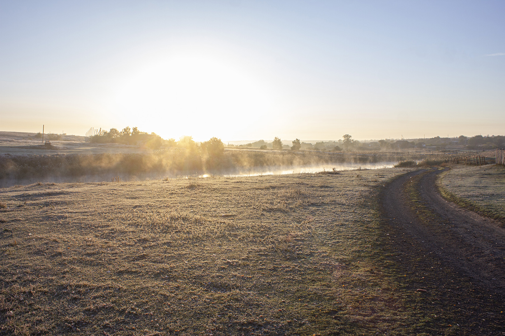
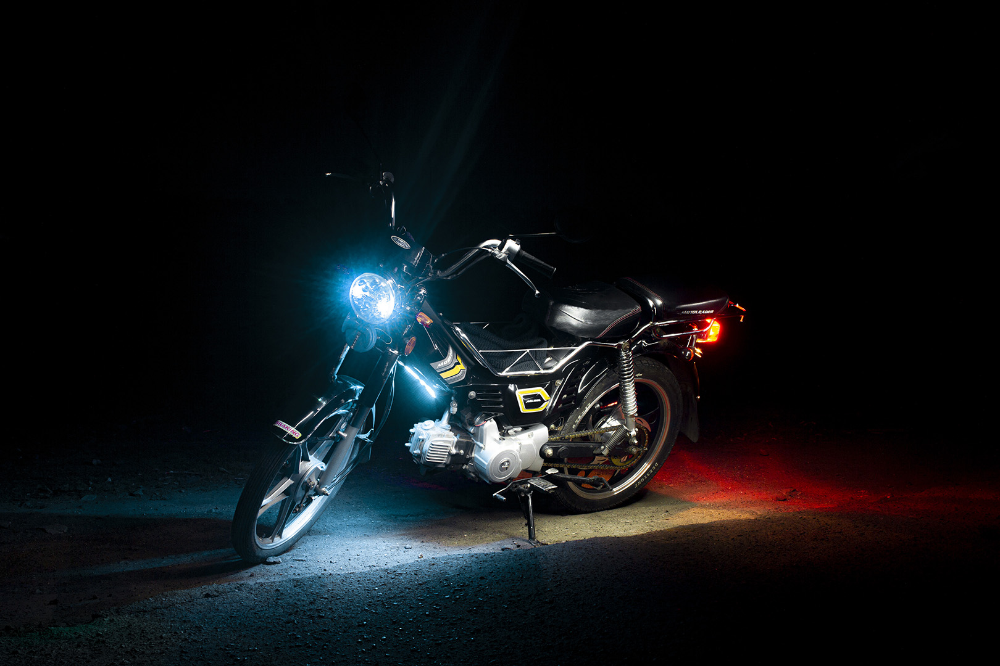

Фото и Предистория
-
Весенние белоснежные цветы. Что может быть лучше? На фотографии они кажутся большими, но на деле это не так. Они достаточно маленькие.Как по мне белый и зелёный цвета хорошо гармонируют на данном фото, также свой вклад вносят вкрапления жёлтого цвета. Очень хорошо фотографировать цветы, когда они находятся в естественной среде обитания.
-
Это фото было сделано у реки ранним утром. Обожаю мягкий свет утреннего и вечернего солнца. Тишина... Полный штиль... Река создающая перспективу, а так же отражение неба и солнечных лучей в воде. Можно просто стоять и наслаждаться природой.
-
Я одновременно люблю и боюсь грозу. Всё-таки она может быть опасна для жизни, но какие только красивые происходят удары молний. Хоть и длятся они доли секунд, но выглядят потрясающе. Никогда не будет двух одинаковых молний, так устроена природа. Но всё-же фотографировать грозу лучше на расстоянии.
-

А это еще одна фотография той же реки, что была выше, но есть 2 отличия. Первое — это другой ракурс. Второе — морозное утро. Как же классно выглядит пар исходящий от реки в контровом свете утреннего солнца. Вообще всегда самые красивые кадры получаются во время рассвета или заката.
-

А здесь я уже фотографировал мопед моего друга в ночной темноте. Для этого необходимо две вещи. Устойчиво поставить фотоаппарат и фонарик. А дальше дело ограничивается только вашей фантазией. Главное, чтоб в процессе съёмки фотоаппарат ни на миллиметр не сдвинулся с места.
-
А здесь "под фотоаппарат" попал мой пёсель.) Я возвращался домой с зимней прогулки. И около дома увидел, что он что-то обнюхивает. Ну я решил не терять момент и сфотографировать собаку. Как по-мне в контровом свете да еще и с классными тучами выглядит прикольно.